W#12: Uncertainty, Bias and Variance, Hypothesis Tests, Forrest Wisdom
Preliminary
Model Specification
- What do we mean by “model”?
- How to be specific.
“Model” in Statistical Learning
We already had the difference between variable-based and agent-based models.
But even in the variable-based model setting of statistical learning, the term model can be more or less abstract:
- Very general: \(Y = f(X_1, \dots, X_m) + \varepsilon\) where \(Y\) is the response variable and \(X_i\) are features which we put in our model: the abstract and unknown function \(f\).
\(\varepsilon\) is the error which we can never explain and usually do not know. - More specific: The model \(f\) could already be of a specific type, like logistic regression, a decision tree or other functional forms. As this need not be the real function we may call it assumed model \(\hat f\) For example a linear model \(\hat f(X_1, \dots, X_m) = \beta_0 + \beta_1 X_1 + \dots + \beta_m X_m + \varepsilon\). Now, the model has specified parameters which values are unknown.
More specific: Fitted model
- Fitted model: When we have a data set with values for \(Y, X_1, \dots, X_m\) we can fit values for the parameters \(\hat\beta_0, \dots, \hat\beta_m\) to the data. This is the fitted model \(\hat f\). This is called parameter estimation: We estimate \(\hat\beta_0, \dots, \hat\beta_m\) with the hope that they match the real values \(\beta_0, \dots, \beta_m\) and that the linear model \(\hat f\) matches the real function \(f\).
- Now we could specify further to fit a specific parameterized model with a specific algorithm, and a specific set of hyperparameters, and maybe more …
Sometimes model means only a certain aspect of all these, for example the formula like sex ~ bill_length_mm + bill_depth_mm + flipper_length_mm + body_mass_g + species + island
Take away: “Model” can mean things with very different granularity. That is OK because they are all related and all fit the definition of being a simplified representation of reality.
Be prepared to be specific about what you mean by “model”.
Bootstrapping to Quantify Uncertainty
Thereby we treat common concepts: Resampling, Standard Error, Confidence Interval, p-Value
Purpose: Quantify uncertainty
- Uncertainty is a central concern in inferential data analysis.
- We want to estimate a parameter of a population from a sample.
Central inferential assumption:
- Our data is a random sample from the population we are interested in.
- No selection biases.
Examples:
- We want to know average height of all people but we only have a sample of people.
- We want know the mean estimate of all possible participants of the ox meat weigh guessing competition from the sample ballots of participants we have.
- We want to learn something about penguins from the data of the penguins in
palmerpenguins::penguins
Practical example: Galton’s Data
Competition: Guess the weight of the meat of an Ox? (Galton, 1907)
What is the mean of all possible participants \(\mu\)?
Practical example: Palmer Penguins
A linear model for body mass of penguins: \(y_i = \beta_0 + \beta_1 x_i + \dots + \beta_m x_m + \varepsilon_i\).
# A tibble: 9 × 5
term estimate std.error statistic p.value
<chr> <dbl> <dbl> <dbl> <dbl>
1 (Intercept) -1500. 576. -2.61 0.00961
2 speciesChinstrap -260. 88.6 -2.94 0.00352
3 speciesGentoo 988. 137. 7.20 0
4 islandDream -13.1 58.5 -0.224 0.823
5 islandTorgersen -48.1 60.9 -0.789 0.431
6 bill_length_mm 18.2 7.14 2.55 0.0113
7 bill_depth_mm 67.6 19.8 3.41 0.000734
8 flipper_length_mm 16.2 2.94 5.52 0.0000001
9 sexmale 387. 48.1 8.04 0 The column estimate shows the coefficients \(\hat\beta_0, \hat\beta_1, \dots, \hat\beta_m\) of the linear model for the variables named in term
How sure can we be that the \(\hat\beta\)’s are close to the \(\beta\)’s we are interested in?1
Bootstrapping1 idea
- Take a bootstrap sample: a random sample taken with replacement from the original sample with the same size.
- Calculate the statistics for the bootstrap sample.
- Repeat steps 1. and 2. many times to create a bootstrap distribution - a distribution of bootstrap statistics
- Use the bootstrap distribution to quantify the uncertainty.
What is the statistic in the Galton example? The mean
What are the statistics in the penguins example? The coefficients
Bootstrapping in practice
- You can do the bootstrapping procedure in various ways (including programming in base R or python).
- We will use convenient functions from
rsampleform thetidymodelspackages.
Resamplings: Galton’s Data
The function sample selects size random elements from a vector x with or without replace.
[1] 1177 1232 1242[1] 1270 1440 1232For tibbles we can use slice_sample.
A bootstrap sample is with replace and of the same size as the original sample:
Compute some means of bootstrapping samples manually:
# A tibble: 1 × 1
`mean(Estimate)`
<dbl>
1 1194.# A tibble: 1 × 1
`mean(Estimate)`
<dbl>
1 1197.# A tibble: 1 × 1
`mean(Estimate)`
<dbl>
1 1193.Bootstrap set: Galton’s Data
The function bootstraps from rsample does this type of bootstrapping for us.
1,000 resamples:
# A tibble: 5 × 2
splits id
<list> <chr>
1 <split [787/295]> Bootstrap0001
2 <split [787/293]> Bootstrap0002
3 <split [787/296]> Bootstrap0003
4 <split [787/303]> Bootstrap0004
5 <split [787/283]> Bootstrap0005The column splits contains split objects.
From each split we can extract the bootstrapped resample with analysis.
# A tibble: 787 × 2
Estimate id
<dbl> <dbl>
1 1160 192
2 1260 678
3 1147 153
4 1221 484
5 1204 373
6 1165 211
7 1112 85
8 1415 780
9 1081 43
10 1168 220
# ℹ 777 more rowsNote: An assessment set contains the observations not selected randomly in the resample. We ignore it here.
Bootstrap distribution: Galton’s Data
We iterate with a map function1 over the splits and extract the analysis set and calculate the mean.
# A tibble: 5 × 3
splits id mean
<list> <chr> <dbl>
1 <split [787/295]> Bootstrap0001 1194.
2 <split [787/293]> Bootstrap0002 1196.
3 <split [787/296]> Bootstrap0003 1199.
4 <split [787/303]> Bootstrap0004 1196.
5 <split [787/283]> Bootstrap0005 1194.Quantify uncertainty? Standard error
Compute the standard deviation of the bootstrap distribution.
The standard deviation of the bootstrap distribution is called the standard error of the statistic.
Do not confuse standard error (of a statistic) and standard deviation (of a variable).
The standard error of the mean can also be estimated directly from the original sample \(x\) as \(\frac{\text{sd}(x)}{\sqrt{n}}\) where \(n\) is the sample size.
Insight: The standard error decreases with sample size! However, it decreases only with the square root of the sample size.
Question: You want to shrink the standard error by half. How much larger does the sample size need to be? 4 times
Confidence interval
Another way to quantify uncertainty is to compute a confidence interval (CI) for a certain confidence level:
The true value of the statistic is expected to lie with the CI with certain probability (the confidence level).
Compute the 95% confidence interval of the bootstrap distribution with quantile-functions:
Code
boots_galton_mean |>
ggplot(aes(x = mean)) +
geom_histogram() +
geom_vline(
xintercept = quantile(boots_galton_mean$mean, 0.025),
color = "red"
) +
geom_vline(
xintercept = quantile(boots_galton_mean$mean, 0.975),
color = "red"
) +
annotate(
"text",
x = 1197,
y = 10,
label = "95% of estimates",
color = "white",
size = unit(12, "pt")
) +
theme_minimal(base_size = 24)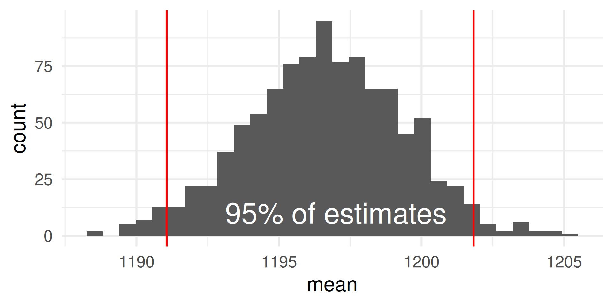
Confidence Interval: Meaning
# A tibble: 1 × 2
lower upper
<dbl> <dbl>
1 1191. 1202.What is the correct interpretation?
- 95% of the estimates in this sample lie between 1191 and 1202.
- We are 95% confident that the mean estimate of all potential participants is between 1191 and 1202.
- We are 95% confident that the mean estimate of this sample is between 1191 and 1202.
Correct: 2.
1. The confidence is about a statistic (here, population mean) not about sample values!
3. We know the mean of the sample precisely!
The confidence interval assesses where 95% of the values are when we sample anew.
Certainty in Confidence Intervals
- Can’t we increase the confidence level to 99% to get a more precise estimate with a more narrow confidence interval?
Bootstrap linear model coefficients
# A tibble: 9 × 5
term estimate std.error statistic p.value
<chr> <dbl> <dbl> <dbl> <dbl>
1 (Intercept) -1500. 576. -2.61 0.00961
2 speciesChinstrap -260. 88.6 -2.94 0.00352
3 speciesGentoo 988. 137. 7.20 0
4 islandDream -13.1 58.5 -0.224 0.823
5 islandTorgersen -48.1 60.9 -0.789 0.431
6 bill_length_mm 18.2 7.14 2.55 0.0113
7 bill_depth_mm 67.6 19.8 3.41 0.000734
8 flipper_length_mm 16.2 2.94 5.52 0.0000001
9 sexmale 387. 48.1 8.04 0 Let us now bootstrap whole models instead of just mean values!
# A function to fit a model to a bootstrap sample and tidy the coefficients
fit_split <- function(split) {
peng_workflow |> fit(data = analysis(split)) |> tidy()
}
# Make 1000 bootstrap samples and fit a model to each
boots_peng <- bootstraps(penguins, times = 1000) |>
mutate(coefs = map(splits, fit_split))Bootstrap data frame
Now we have a column coefs with a list of data frames, each containing the fitted coefficients.
# Bootstrap sampling
# A tibble: 1,000 × 3
splits id coefs
<list> <chr> <list>
1 <split [344/122]> Bootstrap0001 <tibble [9 × 5]>
2 <split [344/123]> Bootstrap0002 <tibble [9 × 5]>
3 <split [344/125]> Bootstrap0003 <tibble [9 × 5]>
4 <split [344/126]> Bootstrap0004 <tibble [9 × 5]>
5 <split [344/136]> Bootstrap0005 <tibble [9 × 5]>
6 <split [344/120]> Bootstrap0006 <tibble [9 × 5]>
7 <split [344/119]> Bootstrap0007 <tibble [9 × 5]>
8 <split [344/136]> Bootstrap0008 <tibble [9 × 5]>
9 <split [344/126]> Bootstrap0009 <tibble [9 × 5]>
10 <split [344/120]> Bootstrap0010 <tibble [9 × 5]>
# ℹ 990 more rowsWe can unnest the list column to make a much longer but unnested data frame:
# A tibble: 9,000 × 7
splits id term estimate std.error statistic p.value
<list> <chr> <chr> <dbl> <dbl> <dbl> <dbl>
1 <split [344/122]> Bootstrap0001 (Inter… -1349. 584. -2.31 2.15e- 2
2 <split [344/122]> Bootstrap0001 specie… -221. 102. -2.17 3.04e- 2
3 <split [344/122]> Bootstrap0001 specie… 938. 139. 6.75 6.62e-11
4 <split [344/122]> Bootstrap0001 island… -74.7 59.2 -1.26 2.08e- 1
5 <split [344/122]> Bootstrap0001 island… -101. 63.8 -1.57 1.16e- 1
6 <split [344/122]> Bootstrap0001 bill_l… 11.4 8.58 1.33 1.83e- 1
7 <split [344/122]> Bootstrap0001 bill_d… 66.0 20.3 3.26 1.24e- 3
8 <split [344/122]> Bootstrap0001 flippe… 17.1 3.04 5.63 3.93e- 8
9 <split [344/122]> Bootstrap0001 sexmale 435. 51.6 8.43 1.12e-15
10 <split [344/123]> Bootstrap0002 (Inter… -2296. 570. -4.03 7.02e- 5
# ℹ 8,990 more rowsSome coefficient distributions
Code
g1 <- boots_peng |>
unnest(coefs) |>
filter(term == "islandDream") |>
ggplot(aes(x = estimate)) +
geom_histogram() +
xlab("coefficients islandDream") +
geom_vline(xintercept = 0, color = "gray") +
theme_minimal(base_size = 24)
g2 <- boots_peng |>
unnest(coefs) |>
filter(term == "bill_length_mm") |>
ggplot(aes(x = estimate)) +
geom_histogram() +
xlab("coefficients bill_length_mm") +
geom_vline(xintercept = 0, color = "gray") +
theme_minimal(base_size = 24)
g3 <- boots_peng |>
unnest(coefs) |>
filter(term == "flipper_length_mm") |>
ggplot(aes(x = estimate)) +
geom_histogram() +
xlab("coefficients flipper_length_mm") +
geom_vline(xintercept = 0, color = "gray") +
theme_minimal(base_size = 24)
g1 + g2 + g3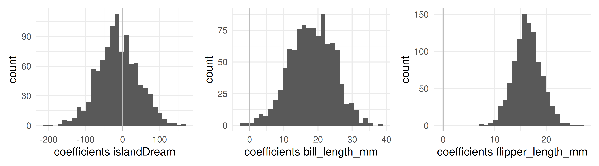
- We could derive bootstrapped p-values from these distributions.
computed p-values from each fit
- Each bootstrap fit also delivers computed p-values for each coefficient.1
Code
g1 <- boots_peng |>
unnest(coefs) |>
filter(term == "islandDream") |>
ggplot(aes(x = p.value)) +
geom_histogram() +
xlab("coefficients islandDream") +
theme_minimal(base_size = 24)
g2 <- boots_peng |>
unnest(coefs) |>
filter(term == "bill_length_mm") |>
ggplot(aes(x = p.value)) +
geom_histogram() +
xlab("coefficients bill_length_mm") +
theme_minimal(base_size = 24)
g3 <- boots_peng |>
unnest(coefs) |>
filter(term == "flipper_length_mm") |>
ggplot(aes(x = p.value)) +
geom_histogram() +
xlab("coefficients flipper_length_mm") +
theme_minimal(base_size = 24)
g1 + g2 + g3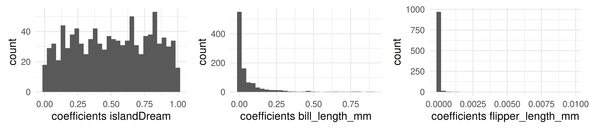
- computed p-values in resamples vary widely (see
islandDream) when bootstrapped p-values show insignificance.
Bias, Variance, MSE, and Crowd Wisdom
Galton’s data
What is the weight of the meat of this ox?
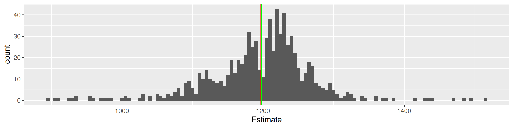
787 estimates, true value 1198, mean 1196.7
RMSE Galton’s data
Describe the estimation game as a predictive model:
- All estimates are made to predict the same value: the truth.
- In contrast to the regression model, the estimate come from people and not from a regression formula.
- The truth is the same for all.
- In contrast to the regression model, the truth is one value and not a value for each prediction
MSE, Variance, and Bias of estimates
In a crowd estimation, \(n\) estimators delivered the estimates \(\hat{y}_1,\dots,\hat{y}_n\). Let us look at the following measures
\(\bar{y} = \frac{1}{n}\sum_{i = 1}^n \hat{y}_i^2\) is the mean estimate, it is the aggregated estimate of the crowd
\(\text{MSE} = \text{RMSE}^2 = \frac{1}{n}\sum_{i = 1}^n (\text{truth} - \hat{y}_i)^2\)
\(\text{Variance} = \frac{1}{n}\sum_{i = 1}^n (\hat{y}_i - \bar{y})^2\)
\(\text{Bias-squared} = (\bar{y} - \text{truth})^2\) which is the square difference between truth and mean estimate.
There is a mathematical relation (a math exercise to check):
\[\text{MSE} = \text{Bias-squared} + \text{Variance}\]
Testing for Galton’s data
\[\text{MSE} = \text{Bias-squared} + \text{Variance}\]
[1] 5409.795[1] 5408.132[1] 1.663346[1] 5409.795The diversity prediction theorem1
- MSE is a measure for the average individuals error
- Bias-squared is a measure for the collective error
- Variance is a measure for the diversity of estimates around the mean estimate
The mathematical relation \[\text{MSE} = \text{Bias-squared} + \text{Variance}\] can be formulated as
Collective error = Individual error - Diversity
Interpretation: The higher the diversity the lower the collective error!
Why is this message a bit suggestive?
The mathematical relation \[\text{MSE} = \text{Bias-squared} + \text{Variance}\] can be formulated as
Collective error = Individual error - Diversity
Interpretation: The higher the diversity the lower the collective error!
- \(\text{MSE}\) and \(\text{Variance}\) are not independent!
- Activities to increase diversity (Variance) typically also increase the average individual error (MSE).
- For example, if we just add more random estimates with same mean but wild variance to our sample we increase both and do not gain any decrease of the collective error.
Accuracy for numerical estimate
- For binary classifiers accuracy has a simple definition: Fraction of correct classifications.
- It can be further informed by other more specific measures taken from the confusion matrix (sensitivity, specificity)
How about numerical estimators?
For example outcomes of estimation games, or linear regression models?
- Accuracy is for example measured by (R)MSE
- \(\text{MSE} = \text{Bias-squared} + \text{Variance}\) shows us that we can make a
bias-variance decomposition - That means some part of the error is a systematic (the bias) and another part due to random variation (the variance).
2-d Accuracy: Trueness and Precision
According to ISO 5725-1 Standard: Accuracy (trueness and precision) of measurement methods and results - Part 1: General principles and definitions. there are two dimension of accuracy of numerical measurement.

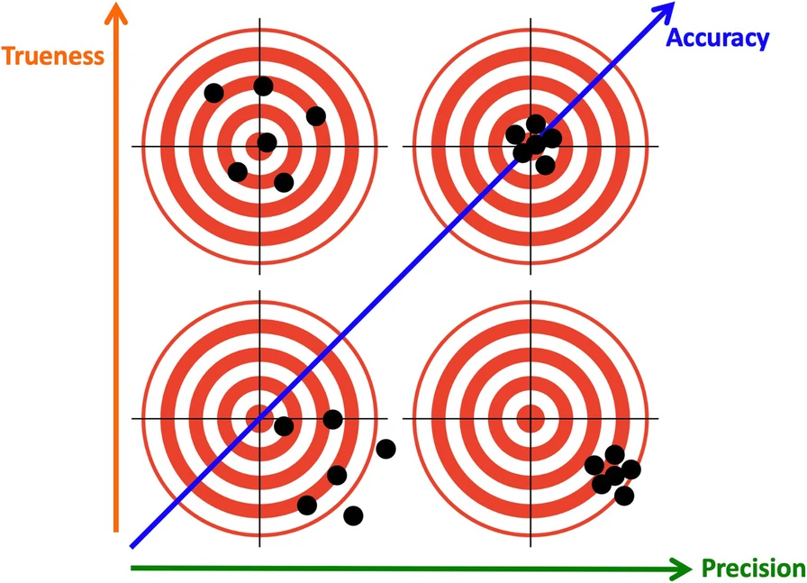
What is a wise crowd?
Assume the dots are estimates. Which is a wise crowd?
- Of course, high trueness and high precision! But, …
- Focusing on the crowd being wise instead of its individuals: High trueness, low precision.
Summary Crowd Wisdom
- The wisdom of the crowd relies on aggregating diverse estimates.
- More generally as these simple guessing games, crowd wisdom is this idea:
Many problems can be solved better by aggregating the answers of many individuals than by relying on a single expert. - The random forest method of statistical learning is built on this idea:
Instead of relying on on heavyily fine tuned decision tree, we create a forrest of many partly randomly generated trees and aggregate their predictions.- It turns out that such forest typically produce predictions that generalize better to new data.
- The bias-variance decomposition helps to understand different sources of errors. It is used to understand error in predicion models (not shown here).
- In an underfitted model, the error stems mostly from variance
- In an overfitted model, the error stems mostly from bias (in the training data)
Hypothesis testing
Large part of the content adapted from http://datasciencebox.org.
Inference in statistics
- Inference is the process of using data to make generalizations about a larger population.
- Two main types of statistical inference: Estimation and Hypothesis testing.
- Estimation: Estimate a population parameter based on a sample statistic. Example: Estimate the average height of all students at CU based on a sample of 50 students.
- We can quantify the uncertainty of our estimate using confidence intervals.
- We can use bootstrapping to create confidence intervals.
- Hypothesis testing: Test a claim about a population parameter using sample data. Examples:
- Test if a new teaching method improves student performance compared to the traditional method.
- Test if a new drug is more effective than a placebo in treating a disease.
- Estimation: Estimate a population parameter based on a sample statistic. Example: Estimate the average height of all students at CU based on a sample of 50 students.
Example: Organ donors
Background:
- Liver donors may seek help of “medical consultants” assisting in all aspects around the surgery to reduce the possibility of complications.
- Patients might choose a consultant based on the historical complication rate of the consultant’s clients.
Case: A consultant advertises:
- The average complication rate for liver donor surgeries in the US is 10%, but her clients have only had 3 complications in the 62 liver donor surgeries. So, she has just 4.8% complications!
Is this evidence for a better track record?
Let us create the data frame for the consultant’s patients:
Formalizing: Parameter vs. statistic
- A parameter for a hypothesis test is the “true” value of interest.
- We estimate the parameter using a sample statistic, here a so called point estimate (just one number).
Parameter: \(q\) true rate of complication: 10% complication rate in US
Statistic: \(\hat{q}\) rate of complication in the sample: \(\frac{3}{62}\) = 4.8% (point estimate)
- The consultant claims that her clients have a lower complication rate than the US average because of here competence. This is a causal claim. Can we assess it with these data? No. The data is observational. For example, maybe patients who can afford a medical consultant can afford better medical care, which can also lead to a lower complication rate.
- What could be a randomized controlled trial (RCT, gold standard for causal analysis)?
- But we can ask Could the low complication rate \(\hat{q} = 4.8\%\) be due to chance?
Formalizing: Hypothesis testing
Null hypothesis \(H_0\): “There is nothing going on”
Here: The complication rate for this consultant is no different than the US average of 10%. The 3 out of 62 complications is just due to chance.Alternative hypothesis \(H_1\): “There is something going on”
The complication rate for this consultant is lower than the US average of 10%.
Idea: Understand hypothesis testing as a court trial
- Formulate \(H_0\): Defendant is innocent
- Formulate \(H_A\): Defendant is guilty
- Present the evidence: Collect data
- Judge the evidence: “Could these data plausibly have happened by chance if the null hypothesis were true?”
Yes: Fail to reject \(H_0\); No: Reject \(H_0\)
Simulating the null distribution
We want simulate several outcomes of 62 patients where the probability of complication for each patient is 0.10. (Null hypothesis \(H_0: q = 0.10\).)
These several outcomes is called the null distribution.
Think abstract of this using a bag of chips:
- How many chips? For example 10 which makes 10% choices possible
- How many colors? 2
- What should colors represent? “complication”, “no complication”
- How many draws? 62 as the data
- With replacement or without replacement? With replacement
Simulation!
[1] "no complication" "no complication" "no complication" "no complication"
[5] "no complication" "complication" "no complication" "complication"
[9] "no complication" "no complication" "no complication" "no complication"
[13] "no complication" "no complication" "no complication" "no complication"
[17] "no complication" "no complication" "no complication" "no complication"
[21] "no complication" "no complication" "no complication" "no complication"
[25] "no complication" "complication" "no complication" "no complication"
[29] "no complication" "no complication" "no complication" "no complication"
[33] "no complication" "no complication" "no complication" "no complication"
[37] "no complication" "no complication" "no complication" "no complication"
[41] "no complication" "no complication" "no complication" "no complication"
[45] "no complication" "no complication" "no complication" "no complication"
[49] "no complication" "no complication" "no complication" "no complication"
[53] "no complication" "no complication" "no complication" "no complication"
[57] "no complication" "no complication" "no complication" "no complication"
[61] "no complication" "no complication"[1] 0.0483871Oh OK, this was exactly the consultant’s rate. Maybe it was a rare event? Let us repeat it.
More simulation!
[1] 0.1129032Automating with tidymodels
Response: outcome (factor)
Null Hypothesis: point
# A tibble: 100 × 2
replicate stat
<int> <dbl>
1 1 0.0806
2 2 0.0968
3 3 0.0645
4 4 0.0645
5 5 0.113
6 6 0.113
7 7 0.113
8 8 0.161
9 9 0.0645
10 10 0.0806
# ℹ 90 more rowsThis creates a sample of 100 from the null distribution. Each row is one simulated outcome of 62 patients with a complication rate under the null hypothesis of 10%.
Visualizing the null distribution
Code
organ_donor <- tibble(
outcome = c(rep("complication", 3), rep("no complication", 59))
)
null_dist <- organ_donor |>
specify(response = outcome, success = "complication") |>
hypothesize(
null = "point", # It is about a point estimate
p = c("complication" = 0.10, "no complication" = 0.90)
) |>
generate(reps = 100, type = "draw") |>
calculate(stat = "prop")
ggplot(data = null_dist, mapping = aes(x = stat)) +
geom_bar(width = 0.005) +
labs(title = "Null distribution")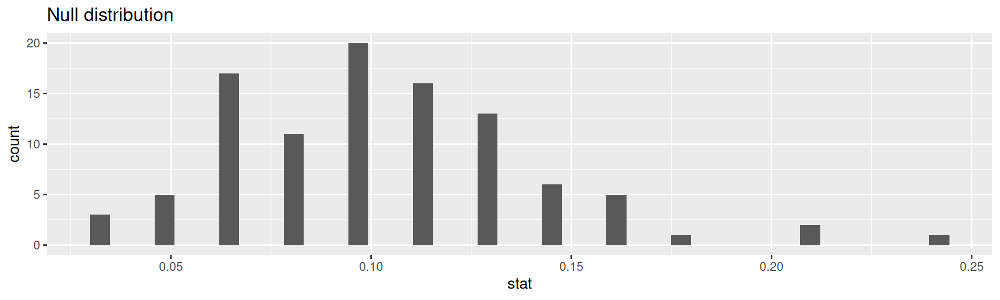
p-value
Hypothesis testing procedure:
- Start with a null hypothesis, \(H_0\), that represents the status quo
- Set an alternative hypothesis, \(H_A\), that represents the research question, i.e. what we are testing for
- Conduct a hypothesis test under the assumption that the null hypothesis is true and calculate a p-value.
Definition p-value:
Probability of observed or more extreme outcome given that the null hypothesis is true.
p-value visualized
How often was the simulated sample proportion at least as extreme as the observed sample proportion?*1
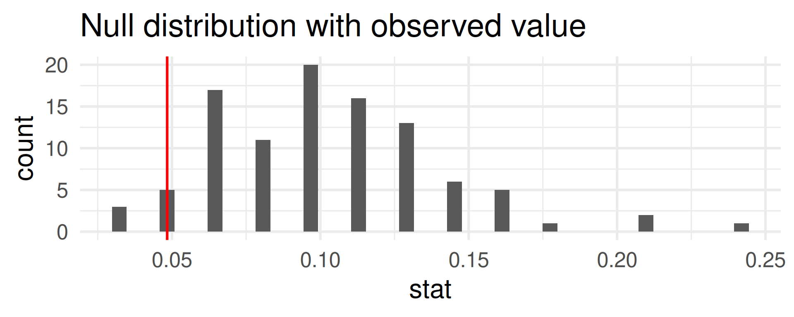
Significance level
- A significance level \(\alpha\) is a threshold we make up to make our judgment about the plausibility of the null hypothesis being true given the observed data.
- We often use \(\alpha = 0.05 = 5\%\) as the cutoff for whether the p-value is low enough that the data are unlikely to have come from the null model.
- If p-value < \(\alpha\), reject \(H_0\) in favor of \(H_A\): The data provide convincing evidence for the alternative hypothesis.
- If p-value > \(\alpha\), fail to reject \(H_0\) in favor of \(H_A\): The data do not provide convincing evidence for the alternative hypothesis.
What is the conclusion of the hypothesis test?
- Since the p-value 0.08 is greater than the significance level 0.05, we fail to reject the null hypothesis.
- This data does not provide convincing evidence that this consultant incurs a lower complication rate than the 10% overall US complication rate.
100 simulations are not sufficient!
Simulate 15,000 times to get an accurate distribution.
null_dist <- organ_donor |>
specify(response = outcome, success = "complication") |>
hypothesize(
null = "point",
p = c("complication" = 0.10, "no complication" = 0.90)
) |>
generate(reps = 15000, type = "simulate") |>
calculate(stat = "prop")
ggplot(data = null_dist, mapping = aes(x = stat)) +
geom_bar(width = 0.005) +
geom_vline(xintercept = 3 / 62, color = "red") +
theme_minimal(base_size = 24)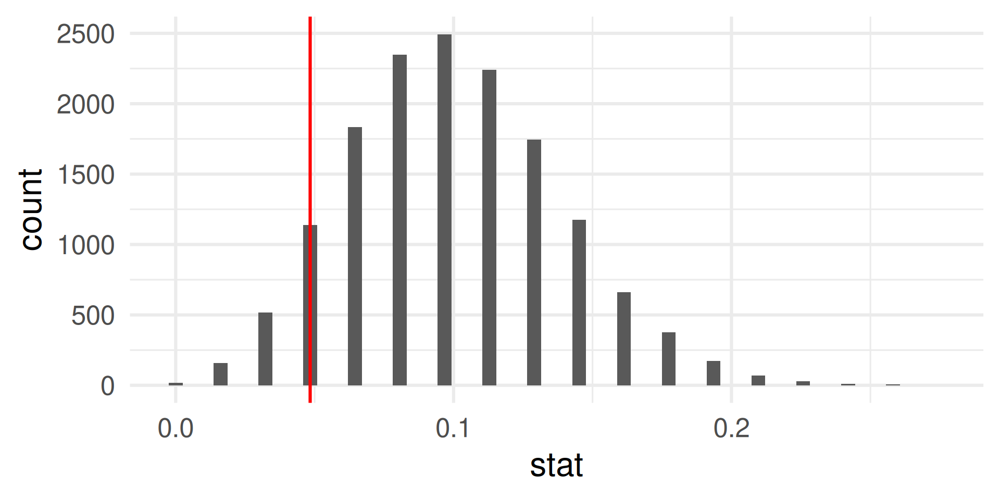
p-value in model outputs
Model output for a linear model with palmer penguins.
# A tibble: 2 × 5
term estimate std.error statistic p.value
<chr> <dbl> <dbl> <dbl> <dbl>
1 (Intercept) 55.1 2.52 21.9 6.91e-67
2 bill_depth_mm -0.650 0.146 -4.46 1.12e- 5Model output for a logistic regression model with email from openintro
# A tibble: 3 × 5
term estimate std.error statistic p.value
<chr> <dbl> <dbl> <dbl> <dbl>
1 (Intercept) 13.6 309. 0.0439 0.965
2 from1 -15.8 309. -0.0513 0.959
3 cc 0.00423 0.0193 0.220 0.826What do the p-values mean? What is the null hypothesis?
Null-Hypothesis: There is no relationship between the predictor variable and the response variable, that means that the coefficient is equal to zero.
Smaller p-value \(\to\) more evidence for rejecting the hypothesis that there is no effect.
xkcd on p-values


- Significance levels are fairly arbitrary. Sometimes they are used (wrongly) as definitive judgments
- They can even be used to do p-hacking: Searching for “significant” effects in observational data
- In parts of science it has become a “gamed” performance metric.
- The p-value says nothing about effect size!
p-value misinterpretation
p-values do not measure1
- the probability that the studied hypothesis is true
- the probability that the data were produced by random chance alone
- the size of an effect
- the “importance of a result” or “evidence regarding a model or hypothesis” (it is only against the null hypothesis).
Correct:
The p-value is the probability of obtaining test results at least as extreme as the result actually observed, under the assumption that the null hypothesis is correct.
p-values and significance tests, when properly applied and interpreted, increase the rigor of the conclusions drawn from data.2
Cross-Validation to Improve Prediction
- Also in prediction we have uncertainty!
- We can address it with cross-validation, which should use when we tune hyperparameters
- We learn, that more trees are better than one in a random forrest
How reliable are performance metrics?
- Model performance changes with the random selection of the training data. How can we then reliably compare models?
A solution: Cross-validation
More specifically, \(v\)-fold cross-validation:
- Shuffle your data and make a partition with \(v\) parts
- Recall from set theory: A partition is a division of a set into mutually disjoint parts which union covers the whole set.
- Here a partition of the the set of all rows in a data frame.
- Recall from set theory: A partition is a division of a set into mutually disjoint parts which union covers the whole set.
- Use 1 part for validation, and the remaining \(v-1\) parts for training
- Repeat \(v\) times
Cross-validation
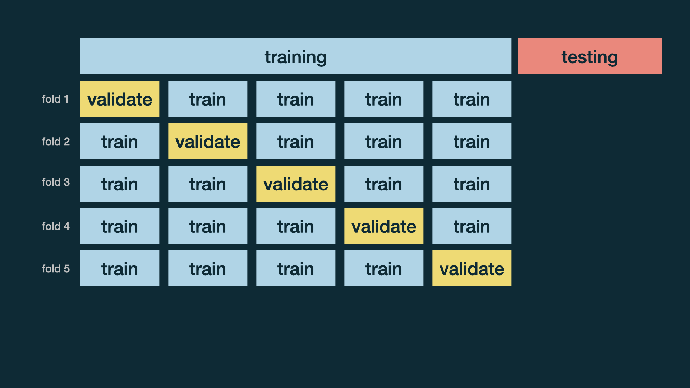
Decision Tree
set.seed(12345) # Test with other seeds to see how the Train-Test-Split changes results!
# 1. Train-Test-Split
peng_split <- initial_split(na.omit(penguins), prop = 0.8, strata = sex)
peng_train <- training(peng_split)
peng_test <- testing(peng_split)
set.seed(NULL) # Reset random. See that the decision tree algorithm is deterministic! Test it!
# 2. Preprocessing-Recipe
peng_recipe <- recipe(body_mass_g ~ ., data = peng_train) |>
step_rm(year)
# 3. Model
peng_regtree <- decision_tree() |>
set_engine("rpart") |>
set_mode("regression")
# 4. Workflow
peng_regtree_wf <- workflow() |>
add_recipe(peng_recipe) |>
add_model(peng_regtree)
# 5. Fit
peng_regtree_fit <- peng_regtree_wf |>
fit(data = peng_train)
# 6. Predict with test data
peng_regtree_pred <- peng_regtree_fit |>
augment(peng_test)
# 7. Evaluate performance
peng_regtree_pred |>
metrics(truth = body_mass_g, estimate = .pred) |>
filter(.metric == "rmse")# A tibble: 1 × 3
.metric .estimator .estimate
<chr> <chr> <dbl>
1 rmse standard 350.Cross-validation
Cross-validation replacing the Train-Test-Split in the workflow:
# 1. 5-fold Cross validation
peng_folds <- vfold_cv(na.omit(penguins), v = 5, strata = sex)
# 2. Preprocessing-Recipe: Same as before
# 3. Model: Same as before
# 4. Workflow: Same as before
# 5. Fit: We use peng_regtree_wf and use fit_resamples() to fit for all folds
peng_folds_regtree_fit <- peng_regtree_wf |>
fit_resamples(resamples = peng_folds)
peng_folds_regtree_fit# Resampling results
# 5-fold cross-validation using stratification
# A tibble: 5 × 4
splits id .metrics .notes
<list> <chr> <list> <list>
1 <split [266/67]> Fold1 <tibble [2 × 4]> <tibble [0 × 4]>
2 <split [266/67]> Fold2 <tibble [2 × 4]> <tibble [0 × 4]>
3 <split [266/67]> Fold3 <tibble [2 × 4]> <tibble [0 × 4]>
4 <split [267/66]> Fold4 <tibble [2 × 4]> <tibble [0 × 4]>
5 <split [267/66]> Fold5 <tibble [2 × 4]> <tibble [0 × 4]># A tibble: 5 × 4
.config id rmse rsq
<chr> <chr> <dbl> <dbl>
1 pre0_mod0_post0 Fold1 439. 0.607
2 pre0_mod0_post0 Fold2 300. 0.876
3 pre0_mod0_post0 Fold3 322. 0.818
4 pre0_mod0_post0 Fold4 330. 0.847
5 pre0_mod0_post0 Fold5 335. 0.851Interpretation:
- Cross-validation shows variation
- The original fit was worse than average
For comparision: Original split
# A tibble: 2 × 3
.metric .estimator .estimate
<chr> <chr> <dbl>
1 rmse standard 350.
2 rsq standard 0.811Tuning Hyperparameters
Tuning
set.seed(1234)
# 1.a. Train-Test-Split (same as before)
# 1.b. CREATE CROSS-VALIDATION FOLDS for TRAINING data
peng_folds <- vfold_cv(peng_train, v = 5, repeats = 5, strata = sex)
# 2. Preprocessing-Recipe (same)
# 3. Model WITH TUNING (modified)
peng_regtree <- decision_tree(
cost_complexity = 0,
tree_depth = tune(),
min_n = 2
) |>
set_engine("rpart") |>
set_mode("regression")
# 4.a. Workflow (same but with new model)
peng_wf <- workflow() |>
add_recipe(peng_recipe) |>
add_model(peng_regtree)
# 4.b. TUNE WITH CROSS-VALIDATION
peng_tune_results <- peng_wf |>
tune_grid(
resamples = peng_folds,
grid = expand_grid(
tree_depth = c(2, 3, 4, 5, 6, 7)
),
metrics = metric_set(rmse)
)
# 4.c. EXAMINE TUNING RESULTS
peng_tune_results |>
collect_metrics(summarize = TRUE) |>
select(-.config, -.estimator)# A tibble: 6 × 5
tree_depth .metric mean n std_err
<dbl> <chr> <dbl> <int> <dbl>
1 2 rmse 314. 25 8.57
2 3 rmse 320. 25 6.80
3 4 rmse 316. 25 5.64
4 5 rmse 331. 25 6.20
5 6 rmse 343. 25 6.02
6 7 rmse 357. 25 6.49collect_metrics(summarize = TRUE) averages performance across folds and repeats!
In total there are 150 fits (6 parameter combinations \(\times\) 5 folds \(\times\) 5 repeats).
Here all fits:
# A tibble: 150 × 7
id id2 tree_depth .metric .estimator .estimate .config
<chr> <chr> <dbl> <chr> <chr> <dbl> <chr>
1 Repeat1 Fold1 2 rmse standard 323. pre0_mod1_post0
2 Repeat1 Fold2 2 rmse standard 324. pre0_mod1_post0
3 Repeat1 Fold3 2 rmse standard 337. pre0_mod1_post0
4 Repeat1 Fold4 2 rmse standard 283. pre0_mod1_post0
5 Repeat1 Fold5 2 rmse standard 262. pre0_mod1_post0
6 Repeat2 Fold1 2 rmse standard 290. pre0_mod1_post0
7 Repeat2 Fold2 2 rmse standard 295. pre0_mod1_post0
8 Repeat2 Fold3 2 rmse standard 337. pre0_mod1_post0
9 Repeat2 Fold4 2 rmse standard 289. pre0_mod1_post0
10 Repeat2 Fold5 2 rmse standard 324. pre0_mod1_post0
11 Repeat3 Fold1 2 rmse standard 286. pre0_mod1_post0
12 Repeat3 Fold2 2 rmse standard 351. pre0_mod1_post0
13 Repeat3 Fold3 2 rmse standard 298. pre0_mod1_post0
14 Repeat3 Fold4 2 rmse standard 285. pre0_mod1_post0
15 Repeat3 Fold5 2 rmse standard 315. pre0_mod1_post0
16 Repeat4 Fold1 2 rmse standard 274. pre0_mod1_post0
17 Repeat4 Fold2 2 rmse standard 294. pre0_mod1_post0
18 Repeat4 Fold3 2 rmse standard 326. pre0_mod1_post0
19 Repeat4 Fold4 2 rmse standard 337. pre0_mod1_post0
20 Repeat4 Fold5 2 rmse standard 291. pre0_mod1_post0
21 Repeat5 Fold1 2 rmse standard 310. pre0_mod1_post0
22 Repeat5 Fold2 2 rmse standard 300. pre0_mod1_post0
23 Repeat5 Fold3 2 rmse standard 326. pre0_mod1_post0
24 Repeat5 Fold4 2 rmse standard 489. pre0_mod1_post0
25 Repeat5 Fold5 2 rmse standard 306. pre0_mod1_post0
26 Repeat1 Fold1 3 rmse standard 352. pre0_mod2_post0
27 Repeat1 Fold2 3 rmse standard 338. pre0_mod2_post0
28 Repeat1 Fold3 3 rmse standard 325. pre0_mod2_post0
29 Repeat1 Fold4 3 rmse standard 294. pre0_mod2_post0
30 Repeat1 Fold5 3 rmse standard 273. pre0_mod2_post0
31 Repeat2 Fold1 3 rmse standard 312. pre0_mod2_post0
32 Repeat2 Fold2 3 rmse standard 313. pre0_mod2_post0
33 Repeat2 Fold3 3 rmse standard 337. pre0_mod2_post0
34 Repeat2 Fold4 3 rmse standard 294. pre0_mod2_post0
35 Repeat2 Fold5 3 rmse standard 308. pre0_mod2_post0
36 Repeat3 Fold1 3 rmse standard 286. pre0_mod2_post0
37 Repeat3 Fold2 3 rmse standard 368. pre0_mod2_post0
38 Repeat3 Fold3 3 rmse standard 298. pre0_mod2_post0
39 Repeat3 Fold4 3 rmse standard 315. pre0_mod2_post0
40 Repeat3 Fold5 3 rmse standard 339. pre0_mod2_post0
41 Repeat4 Fold1 3 rmse standard 276. pre0_mod2_post0
42 Repeat4 Fold2 3 rmse standard 305. pre0_mod2_post0
43 Repeat4 Fold3 3 rmse standard 331. pre0_mod2_post0
44 Repeat4 Fold4 3 rmse standard 331. pre0_mod2_post0
45 Repeat4 Fold5 3 rmse standard 313. pre0_mod2_post0
46 Repeat5 Fold1 3 rmse standard 333. pre0_mod2_post0
47 Repeat5 Fold2 3 rmse standard 299. pre0_mod2_post0
48 Repeat5 Fold3 3 rmse standard 343. pre0_mod2_post0
49 Repeat5 Fold4 3 rmse standard 436. pre0_mod2_post0
50 Repeat5 Fold5 3 rmse standard 292. pre0_mod2_post0
51 Repeat1 Fold1 4 rmse standard 336. pre0_mod3_post0
52 Repeat1 Fold2 4 rmse standard 317. pre0_mod3_post0
53 Repeat1 Fold3 4 rmse standard 307. pre0_mod3_post0
54 Repeat1 Fold4 4 rmse standard 327. pre0_mod3_post0
55 Repeat1 Fold5 4 rmse standard 257. pre0_mod3_post0
56 Repeat2 Fold1 4 rmse standard 314. pre0_mod3_post0
57 Repeat2 Fold2 4 rmse standard 285. pre0_mod3_post0
58 Repeat2 Fold3 4 rmse standard 343. pre0_mod3_post0
59 Repeat2 Fold4 4 rmse standard 306. pre0_mod3_post0
60 Repeat2 Fold5 4 rmse standard 306. pre0_mod3_post0
61 Repeat3 Fold1 4 rmse standard 275. pre0_mod3_post0
62 Repeat3 Fold2 4 rmse standard 372. pre0_mod3_post0
63 Repeat3 Fold3 4 rmse standard 313. pre0_mod3_post0
64 Repeat3 Fold4 4 rmse standard 305. pre0_mod3_post0
65 Repeat3 Fold5 4 rmse standard 296. pre0_mod3_post0
66 Repeat4 Fold1 4 rmse standard 321. pre0_mod3_post0
67 Repeat4 Fold2 4 rmse standard 300. pre0_mod3_post0
68 Repeat4 Fold3 4 rmse standard 315. pre0_mod3_post0
69 Repeat4 Fold4 4 rmse standard 318. pre0_mod3_post0
70 Repeat4 Fold5 4 rmse standard 286. pre0_mod3_post0
71 Repeat5 Fold1 4 rmse standard 354. pre0_mod3_post0
72 Repeat5 Fold2 4 rmse standard 303. pre0_mod3_post0
73 Repeat5 Fold3 4 rmse standard 338. pre0_mod3_post0
74 Repeat5 Fold4 4 rmse standard 383. pre0_mod3_post0
75 Repeat5 Fold5 4 rmse standard 318. pre0_mod3_post0
76 Repeat1 Fold1 5 rmse standard 331. pre0_mod4_post0
77 Repeat1 Fold2 5 rmse standard 328. pre0_mod4_post0
78 Repeat1 Fold3 5 rmse standard 324. pre0_mod4_post0
79 Repeat1 Fold4 5 rmse standard 329. pre0_mod4_post0
80 Repeat1 Fold5 5 rmse standard 277. pre0_mod4_post0
81 Repeat2 Fold1 5 rmse standard 342. pre0_mod4_post0
82 Repeat2 Fold2 5 rmse standard 308. pre0_mod4_post0
83 Repeat2 Fold3 5 rmse standard 342. pre0_mod4_post0
84 Repeat2 Fold4 5 rmse standard 329. pre0_mod4_post0
85 Repeat2 Fold5 5 rmse standard 327. pre0_mod4_post0
86 Repeat3 Fold1 5 rmse standard 365. pre0_mod4_post0
87 Repeat3 Fold2 5 rmse standard 365. pre0_mod4_post0
88 Repeat3 Fold3 5 rmse standard 325. pre0_mod4_post0
89 Repeat3 Fold4 5 rmse standard 301. pre0_mod4_post0
90 Repeat3 Fold5 5 rmse standard 314. pre0_mod4_post0
91 Repeat4 Fold1 5 rmse standard 331. pre0_mod4_post0
92 Repeat4 Fold2 5 rmse standard 339. pre0_mod4_post0
93 Repeat4 Fold3 5 rmse standard 323. pre0_mod4_post0
94 Repeat4 Fold4 5 rmse standard 348. pre0_mod4_post0
95 Repeat4 Fold5 5 rmse standard 270. pre0_mod4_post0
96 Repeat5 Fold1 5 rmse standard 396. pre0_mod4_post0
97 Repeat5 Fold2 5 rmse standard 291. pre0_mod4_post0
98 Repeat5 Fold3 5 rmse standard 327. pre0_mod4_post0
99 Repeat5 Fold4 5 rmse standard 406. pre0_mod4_post0
100 Repeat5 Fold5 5 rmse standard 342. pre0_mod4_post0
101 Repeat1 Fold1 6 rmse standard 320. pre0_mod5_post0
102 Repeat1 Fold2 6 rmse standard 339. pre0_mod5_post0
103 Repeat1 Fold3 6 rmse standard 352. pre0_mod5_post0
104 Repeat1 Fold4 6 rmse standard 343. pre0_mod5_post0
105 Repeat1 Fold5 6 rmse standard 309. pre0_mod5_post0
106 Repeat2 Fold1 6 rmse standard 317. pre0_mod5_post0
107 Repeat2 Fold2 6 rmse standard 324. pre0_mod5_post0
108 Repeat2 Fold3 6 rmse standard 347. pre0_mod5_post0
109 Repeat2 Fold4 6 rmse standard 361. pre0_mod5_post0
110 Repeat2 Fold5 6 rmse standard 324. pre0_mod5_post0
111 Repeat3 Fold1 6 rmse standard 404. pre0_mod5_post0
112 Repeat3 Fold2 6 rmse standard 365. pre0_mod5_post0
113 Repeat3 Fold3 6 rmse standard 363. pre0_mod5_post0
114 Repeat3 Fold4 6 rmse standard 312. pre0_mod5_post0
115 Repeat3 Fold5 6 rmse standard 332. pre0_mod5_post0
116 Repeat4 Fold1 6 rmse standard 316. pre0_mod5_post0
117 Repeat4 Fold2 6 rmse standard 326. pre0_mod5_post0
118 Repeat4 Fold3 6 rmse standard 337. pre0_mod5_post0
119 Repeat4 Fold4 6 rmse standard 391. pre0_mod5_post0
120 Repeat4 Fold5 6 rmse standard 296. pre0_mod5_post0
121 Repeat5 Fold1 6 rmse standard 413. pre0_mod5_post0
122 Repeat5 Fold2 6 rmse standard 327. pre0_mod5_post0
123 Repeat5 Fold3 6 rmse standard 341. pre0_mod5_post0
124 Repeat5 Fold4 6 rmse standard 382. pre0_mod5_post0
125 Repeat5 Fold5 6 rmse standard 326. pre0_mod5_post0
126 Repeat1 Fold1 7 rmse standard 310. pre0_mod6_post0
127 Repeat1 Fold2 7 rmse standard 351. pre0_mod6_post0
128 Repeat1 Fold3 7 rmse standard 374. pre0_mod6_post0
129 Repeat1 Fold4 7 rmse standard 362. pre0_mod6_post0
130 Repeat1 Fold5 7 rmse standard 318. pre0_mod6_post0
131 Repeat2 Fold1 7 rmse standard 313. pre0_mod6_post0
132 Repeat2 Fold2 7 rmse standard 317. pre0_mod6_post0
133 Repeat2 Fold3 7 rmse standard 358. pre0_mod6_post0
134 Repeat2 Fold4 7 rmse standard 380. pre0_mod6_post0
135 Repeat2 Fold5 7 rmse standard 328. pre0_mod6_post0
136 Repeat3 Fold1 7 rmse standard 425. pre0_mod6_post0
137 Repeat3 Fold2 7 rmse standard 354. pre0_mod6_post0
138 Repeat3 Fold3 7 rmse standard 377. pre0_mod6_post0
139 Repeat3 Fold4 7 rmse standard 326. pre0_mod6_post0
140 Repeat3 Fold5 7 rmse standard 343. pre0_mod6_post0
141 Repeat4 Fold1 7 rmse standard 366. pre0_mod6_post0
142 Repeat4 Fold2 7 rmse standard 336. pre0_mod6_post0
143 Repeat4 Fold3 7 rmse standard 358. pre0_mod6_post0
144 Repeat4 Fold4 7 rmse standard 404. pre0_mod6_post0
145 Repeat4 Fold5 7 rmse standard 346. pre0_mod6_post0
146 Repeat5 Fold1 7 rmse standard 424. pre0_mod6_post0
147 Repeat5 Fold2 7 rmse standard 346. pre0_mod6_post0
148 Repeat5 Fold3 7 rmse standard 374. pre0_mod6_post0
149 Repeat5 Fold4 7 rmse standard 396. pre0_mod6_post0
150 Repeat5 Fold5 7 rmse standard 326. pre0_mod6_post0Tuning visualizations
Visualization for evalution
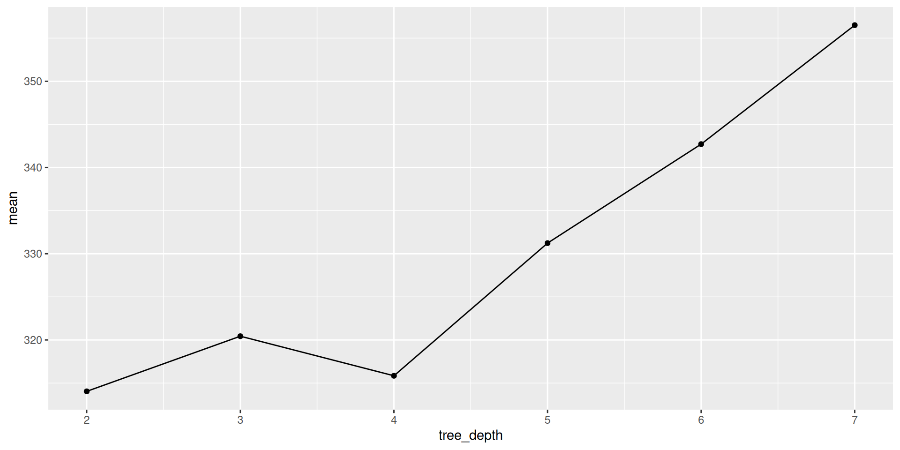
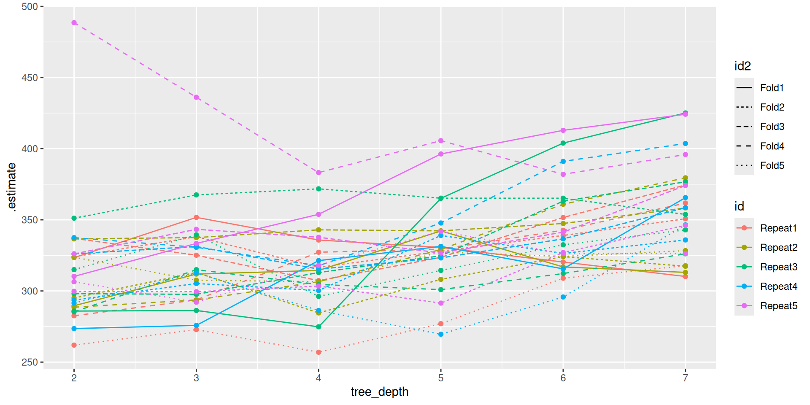
Tuning best parameters
Selection of best parameters
# A tibble: 5 × 5
tree_depth .metric mean n std_err
<dbl> <chr> <dbl> <int> <dbl>
1 2 rmse 314. 25 8.57
2 4 rmse 316. 25 5.64
3 3 rmse 320. 25 6.80
4 5 rmse 331. 25 6.20
5 6 rmse 343. 25 6.02Best parameters: tree_depth = 2
Fit with tune parameters
# A tibble: 3 × 3
.metric .estimator .estimate
<chr> <chr> <dbl>
1 rmse standard 350.
2 rsq standard 0.811
3 mae standard 284. - Although, best parameters differ from default, performance is the same.
- This can happen, especially when the model is simple and the dataset is small.
How can we improve the performance with the idea of trees?
Create several trees and aggregate them in a random forest!
Random Forests
Crowd Wisdom through many decision trees
Random forests

How a random forest is made
- Build many decision trees independently (default: 500 trees), each trained on the full dataset
In each tree do the following at each decision node:- Randomly select
mtryfeatures from all available features (e.g., 2 out of 6, rule of thumb: square root of the number of features) - Find the best split only among those randomly selected features.
The randomness in variable selection at each split ensures trees are different from each other, this shall reduce overfitting.
- Randomly select
- Make predictions by
- averaging predictions across all trees (regression) or
- majority vote (classification)
Random forest regression
# 1. Train-Test-Split
# 2. Preprocessing-Recipe
# 3. Model
peng_regforest <- rand_forest() |>
set_engine("ranger", importance = "impurity") |>
set_mode("regression")
# 4. Workflow
peng_regforest_fit <- workflow() |>
add_recipe(peng_recipe) |>
add_model(peng_regforest) |>
# 5. Fit
fit(data = peng_train)
peng_regforest_fit══ Workflow [trained] ══════════════════════════════════════════════════════════
Preprocessor: Recipe
Model: rand_forest()
── Preprocessor ────────────────────────────────────────────────────────────────
1 Recipe Step
• step_rm()
── Model ───────────────────────────────────────────────────────────────────────
Ranger result
Call:
ranger::ranger(x = maybe_data_frame(x), y = y, importance = ~"impurity", num.threads = 1, verbose = FALSE, seed = sample.int(10^5, 1))
Type: Regression
Number of trees: 500
Sample size: 266
Number of independent variables: 6
Mtry: 2
Target node size: 5
Variable importance mode: impurity
Splitrule: variance
OOB prediction error (MSE): 83738.4
R squared (OOB): 0.8721779 With set_engine("ranger", importance = "impurity") we specify the method of specification for the computation of variable importance.
Random forest regression continued
# A tibble: 3 × 3
.metric .estimator .estimate
<chr> <chr> <dbl>
1 rmse standard 325.
2 rsq standard 0.835
3 mae standard 265. - Random forest often outperform decision tree and linear models.
- However, they have no natural visualization and are less interpretable.
They have thousands of parameters with all these trees!
Variable importance
Variable importance identify features that matter for good predicitions.
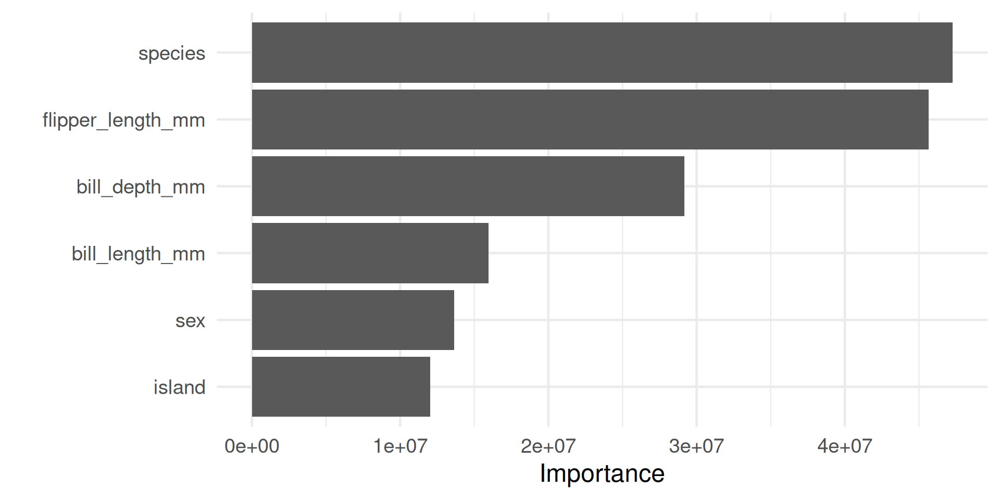
- The computation of variable importance is a step of post-hoc interpretation of complex models like random forests because it is computed after the model is fitted.
- In contrast, pre-processing happens before fitting the model.
All details about exact definition and different methods to compute variable importance are skipped here.
Classification with random forrest
First the spam prediction decision tree
set.seed(12345) # Just to fix the presentation, test without when doing yourself!
# 1. Train-Test-Split
email_split <- initial_split(email, prop = 0.7, strata = spam)
email_train <- training(email_split)
email_test <- testing(email_split)
# 2. Preprocessing-Recipe
email_recipe <- recipe(spam ~ ., data = email) |>
step_rm(from, sent_email, viagra) |> # Remove some variables (see former lectures)
step_date(time, features = c("dow", "month")) |> # Make day-of-week and month features ...
step_rm(time) |> # ... and remove the date-time itself
step_zv(all_predictors()) # remove predictors with zero variance
# 3. Model
email_classtree <- decision_tree() |>
set_engine("rpart") |>
set_mode("classification")
# 4. Workflow
email_classtree_wf <- workflow() |>
add_recipe(email_recipe) |>
add_model(email_classtree)
# 5. Fit
email_classtree_fit <- email_classtree_wf |>
fit(data = email_train)
# 6./7. Predict with test data and evaluate performance
class_metrics <- metric_set(accuracy, sensitivity, specificity)
email_classtree_fit |>
augment(email_test) |>
class_metrics(truth = spam, estimate = .pred_class, event_level = "second")# A tibble: 3 × 3
.metric .estimator .estimate
<chr> <chr> <dbl>
1 accuracy binary 0.910
2 sensitivity binary 0.244
3 specificity binary 0.988Random forest classification
# 1. Train-Test-Split
email_split <- initial_split(na.omit(email), prop = 0.8)
email_train <- training(email_split)
email_test <- testing(email_split)
# 2. Preprocessing-Recipe
email_recipe <- recipe(spam ~ ., data = email) |>
step_rm(from, sent_email, viagra) |> # Remove some variables (see former lectures)
step_date(time, features = c("dow", "month")) |> # Make day-of-week and month features ...
step_rm(time) |> # ... and remove the date-time itself
step_zv(all_predictors()) # remove predictors with zero variance
# 3. Model
email_forest <- rand_forest() |>
set_engine("ranger", importance = "impurity") |>
set_mode("classification")
# 4. Workflow
email_forest_fit <- workflow() |>
add_recipe(email_recipe) |>
add_model(email_forest) |>
# 5. Fit
fit(data = email_train)
email_forest_fit # Look at the fit object══ Workflow [trained] ══════════════════════════════════════════════════════════
Preprocessor: Recipe
Model: rand_forest()
── Preprocessor ────────────────────────────────────────────────────────────────
4 Recipe Steps
• step_rm()
• step_date()
• step_rm()
• step_zv()
── Model ───────────────────────────────────────────────────────────────────────
Ranger result
Call:
ranger::ranger(x = maybe_data_frame(x), y = y, importance = ~"impurity", num.threads = 1, verbose = FALSE, seed = sample.int(10^5, 1), probability = TRUE)
Type: Probability estimation
Number of trees: 500
Sample size: 3136
Number of independent variables: 18
Mtry: 4
Target node size: 10
Variable importance mode: impurity
Splitrule: gini
OOB prediction error (Brier s.): 0.04985914 Random forest classification continued
# A tibble: 3 × 3
.metric .estimator .estimate
<chr> <chr> <dbl>
1 accuracy binary 0.935
2 sensitivity binary 0.378
3 specificity binary 0.993In particular specificity (true negative rate) is better than for the decision tree!
How does prediction work for classification with random forests? How do we aggregate the classification of all the trees in the forrest? (For regression we were averaging.)
Majority vote across all trees!
Variable importance
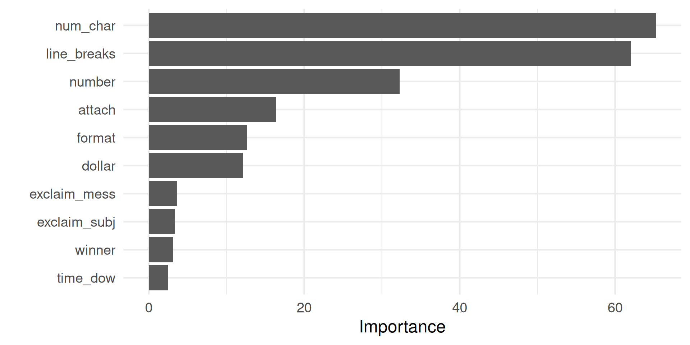
Summary new insights prediction
- A decision tree is deterministic. However, results change with different train-test-splits.
- Cross-validation helps to assess model performance more reliably.
- Tuning hyperparameters can improve model performance, but often defaults are good.
- It is all about quantifying when overfitting kicks in and out-of-sample performance degrades.
- Random forests take the idea of decision trees further by creating many trees and aggregating their predictions. They are not deterministic but stochastic even with the same training data.
- Why are random forrests better than individual trees?
- By limiting choices at each split to a random subset of features, we prevent any single strong predictor from dominating all trees, creating a diverse “forest” of models that collectively perform better than any individual tree.
- The wisdom of crowds in a random forrest of decision trees.
MDSSB-DSCO-02: Data Science Concepts